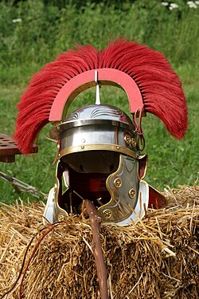
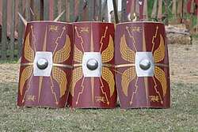
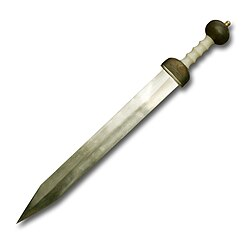
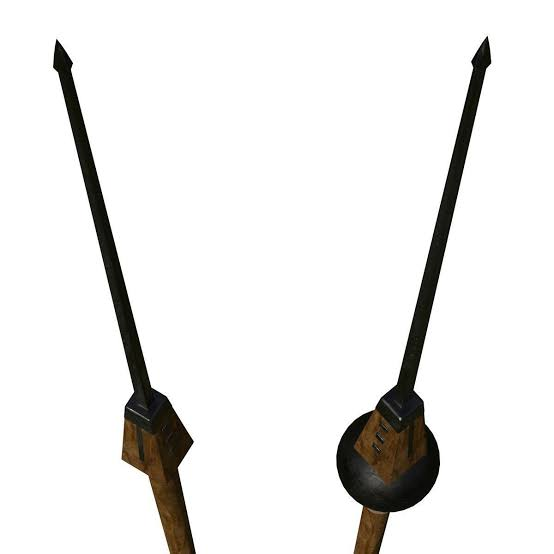

-
Definição
O Imperador Romano era o governante monárquico e chefe de Estado do Império Romano, O termo "imperador" é um termo moderno e não era usado pelo Império Romano.
As legiões que vem do Latim legio eram as maiores unidades militares romanas, contando com mais de 3000 homens (os legionários) em suas fileiras no início da Era Republicana, chegando posteriormente a ter mais de 5200 soldados no período do Império, consistido de centúrias como a unidade básica. Até meados do primeiro século da Era Cristã, uma legião era formada pelo somatório de dez coortes (com 500 homens em cada, totalizando cerca de 5000 em armas). Mais tarde, foi mudada para nove coortes de tamanho padrão (com 6 centúrias de 80 homens cada) e uma coorte com o dobro do tamanho (cinco centúrias também maiores, com 160 legionários cada). Durante o período imperial, as legiões eram formadas pela infantaria pesada de elite do exército romano, recrutada exclusivamente entre cidadãos romanos, enquanto o resto do exército era formado pelos chamados auxiliares (que em sua maioria eram não romanos), que forneciam infantaria extra, arqueiros e boa parte da cavalaria. Na segunda metade da Era Imperial, a maior parte do exército romano passou a ser formado por auxiliares.
Os legionários
As legiões tiveram origem quando Roma era ainda uma cidade modesta, que enfrentava constantes conflitos com povos vizinhos, como etruscos, samnitas, vênetos e outros. Começaram com um dever patriótico, pelo qual todo romano livre, do sexo masculino e maior de idade (entre 14 a 17 anos) tinha o dever de pegar em armas, quando necessário, para defender a cidade. Passado o perigo, o exército dispersava-se e cada um voltava às suas atividades normais. Mais tarde, com a expansão territorial que viria a dar origem ao Império Romano, surgiu a necessidade de um exército profissional, que estivesse disponível permanentemente e pudesse ser enviado para onde fosse necessário. Daí em diante, as legiões passaram a ter caráter voluntário. Em geral não havia falta de interessados, já que o soldo de um legionário era consideravelmente superior ao salário dos trabalhadores comuns, além de (salvo exceções) ser pago com regularidade. Inicialmente só cidadãos romanos podiam ingressar nas legiões, o que não significa que exclusivamente italianos as integrassem: filhos de cidadãos romanos nascidos nas províncias, muitas vezes de mães nativas, eram igualmente cidadãos.
Armas
O legionário romano possuía armas defensivas e ofensivas. Entre as primeiras enumeremos:
-
casse (cassis; elmo de bronze) e gálea (galea; capacete, a princípio de couro e, posteriormente, de metal);

-
lorica (couraça de metal e couro que protegia a parte superior do corpo);

-
Escudo (scutum): de madeira, revestido de pano e couro e, depois de Marco Fúrio Camilo, reforçado por uma orla metálica. Era ovalado e convexo no século III; semicilíndrico no século I Media cerca de 1,20 m de altura e 80 cm de largura. Algumas coortes de Júlio César usavam um escudo de couro chamado cetra: as coortes cetratas (cohortes cetratae). Parma era um pequeno escudo redondo usado por infantes e cavaleiros.

Entre as armas ofensivas, havia:
-
gládio: espada curta bigume usada por todos os soldados;

-
pilo: dardo de madeira com ponta de ferro;
